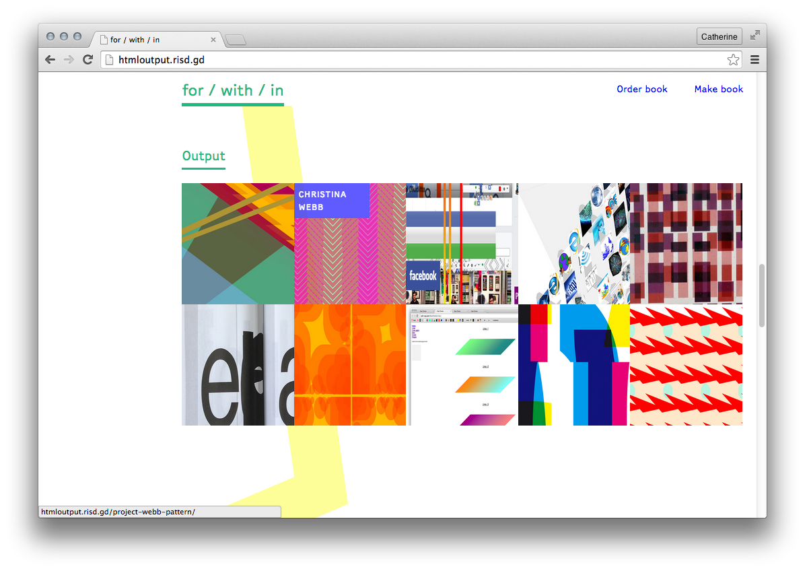
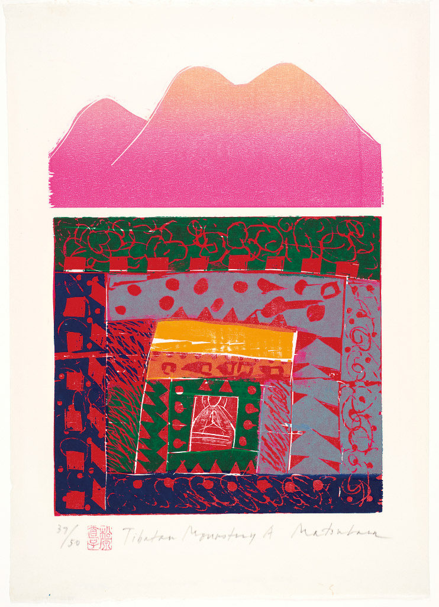

Yatra is a Devanagari and Latin display font based on the hand-painted signage of the Mumbai Railways. It's available for free on Google Fonts. Yatra was the result of research from a Fulbright scholarship in India.